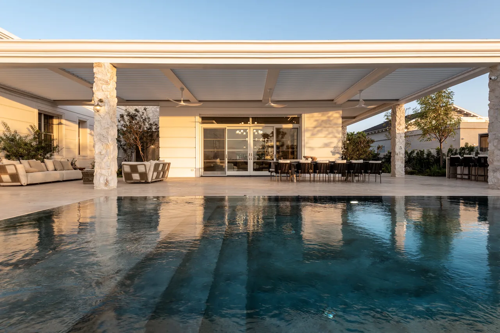
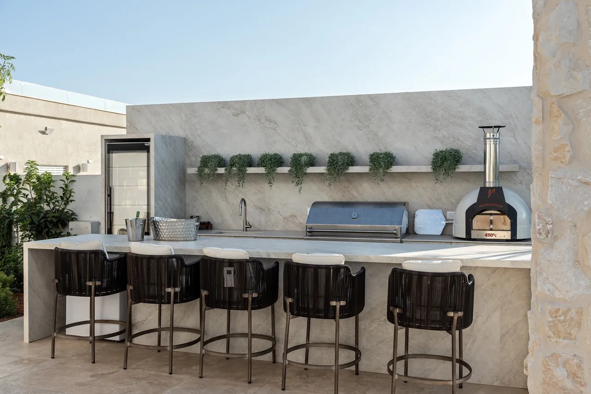
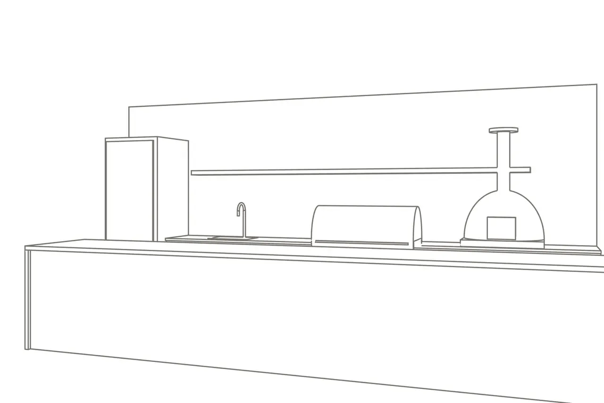
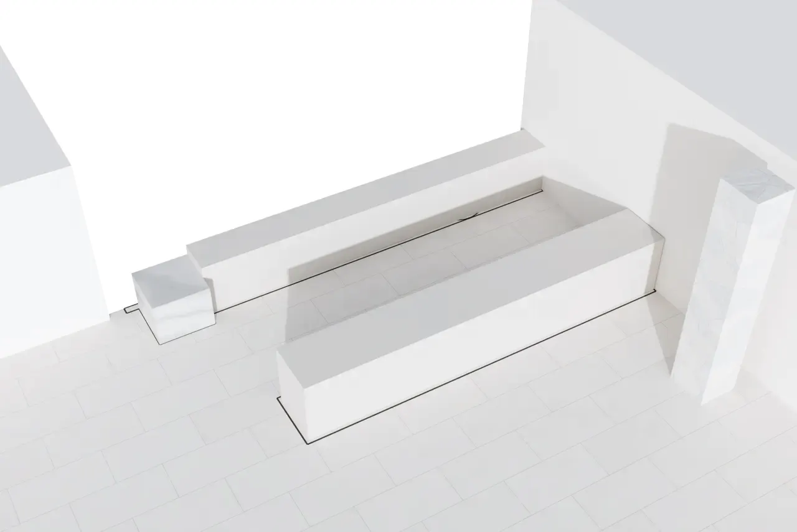
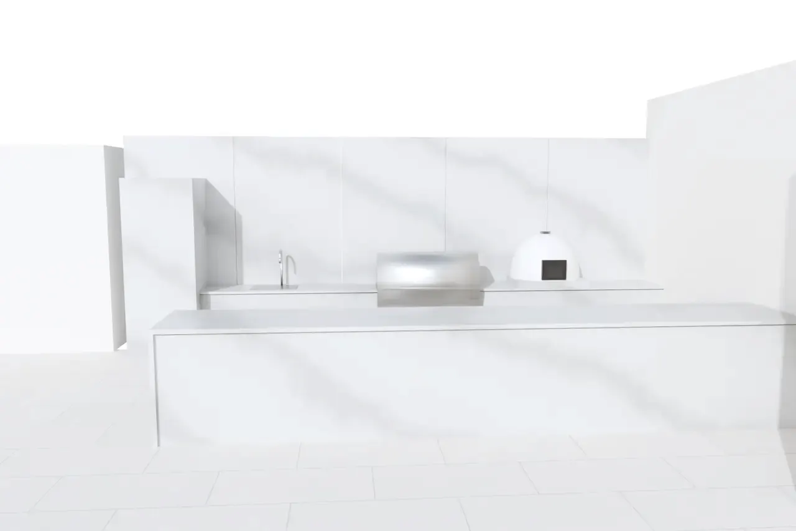
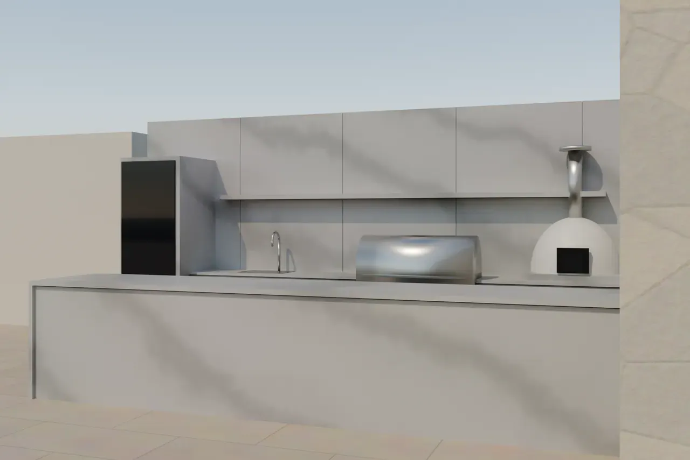
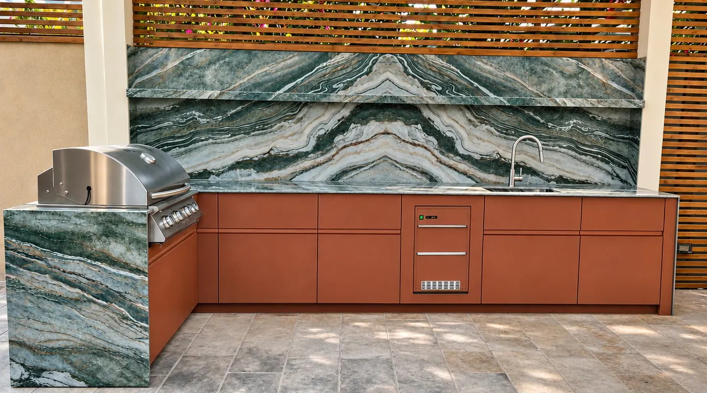
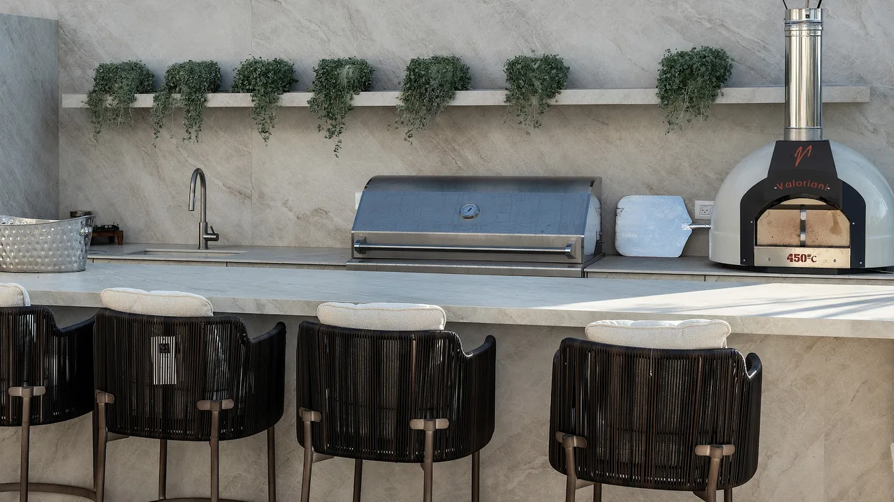

KFT מטבחי חוץ
הערב הכי טוב בבית קורה בחוץ.
עסק משפחתי עם מפעל משלנו. מתכננים לחצר שלך, מייצרים אצלנו ומתקינים בעצמנו.
במה אנחנו מתמחים?
כל מטבח מתוכנן לשטח שיש לך.



מהשרטוט ועד האש.
-

התכנון
הכל מתחיל ליד שולחן אחד. אתה מספר למעצב איך נראה אצלך יום שישי, כמה אנשים מגיעים בחג ולאיזה צד שוקעת השמש, והוא משרטט. איפה יעמוד הגריל, איפה הטאבון, ואיפה יישבו כולם.
בונה או משפץ? כדאי לשבת איתנו מוקדם, כשכל אפשרות בחצר עוד פתוחה.
-

הייצור
אחרי מדידה בשטח ואישור סופי, התוכנית יורדת לייצור במפעל שלנו. הארון, החזית והשיש נבנים אצלנו, לפי המידות של החצר שלך.
-

ההתקנה
צוות ההתקנה שלנו מגיע ומרכיב את המטבח במקום, חלק אחרי חלק.
-

המטבח מוכן
כשהם מסיימים, נשאר רק להדליק את האש.
וזה המטבח עצמו.
צילום, לא הדמיה. באיזו שעה תשב בו?



ככה זה נראה מהכיסא שלך.
השרטוט
ככה זה נראה אצל אחד הלקוחות שלנו. הכל התחיל בשרטוט של החצר שלו.
הצורה
הגריל, הכיור והמקרר קיבלו כל אחד מקום, לפי מה שנוח בחצר הזו.
החומרים
אבן ירוקה לאורך הקיר, חזיתות בגוון חמרה וגריל נירוסטה. אלה הבחירות של הבית הזה.
התוצאה
ככה זה נראה בסוף, וזה מה שרואים מהכיסא.
נסה בעצמך: איזו אבן?
את האבן עצמה בוחרים מול הדוגמאות, בפגישת התכנון.


מי אנחנו
גדלנו על הלחם ועל הטאבון, ועל הירוק שבחוץ. היום אנחנו מתכננים, מייצרים ומתקינים מטבחי חוץ בעצמנו, מהמפעל שלנו.
לסיפור שלנועוד פרויקטים


ספר לנו על הבית.
שם, טלפון וסוג הבית, ונחזור אליך.
ברכיה
גן התצוגה, משק 20, מושב ברכיה
הרצליה
הסניף שלנו במרכז